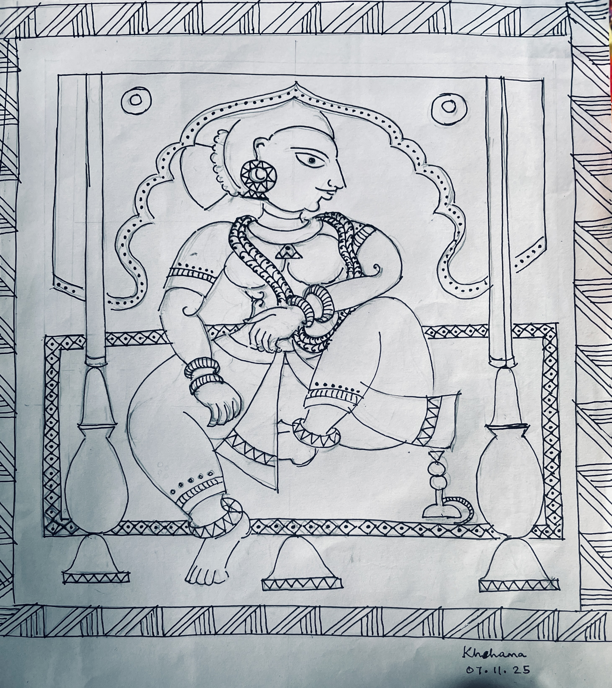

 <br>
Recreating a scene from Vrindaban, with jhorakas and typical architectural grandeur. <br><br>

 <br>
Foliage <br><br>

 <br>
Woman Waiting  <br><br>

 <br><br>
<h4>Biography</h4>
<p>
Haimonti is trained as a computer scientist, 
  but loves to read, paint, and write in her spare time.
</p>
